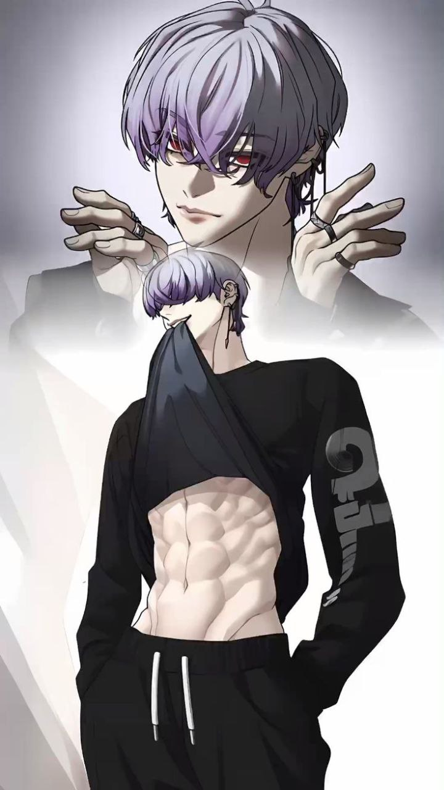
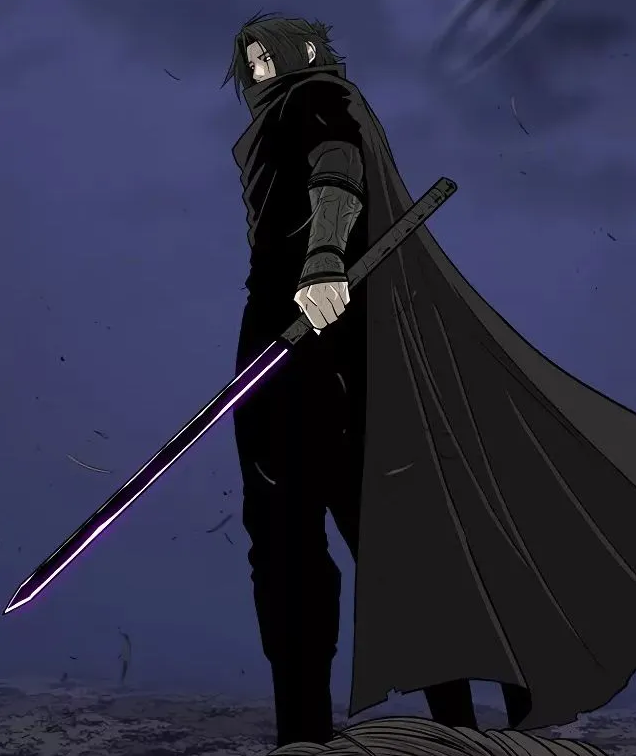
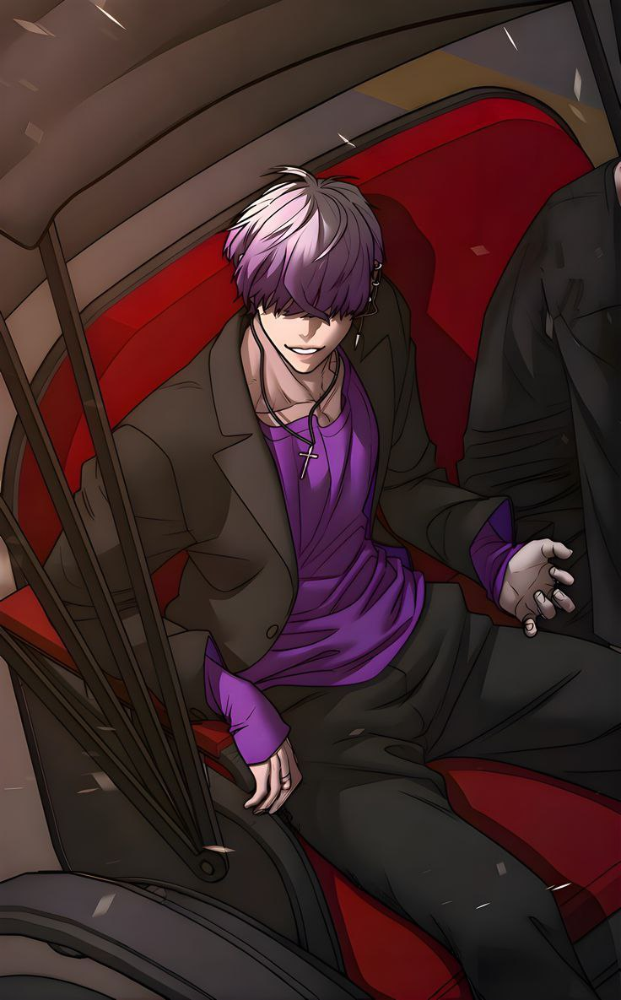
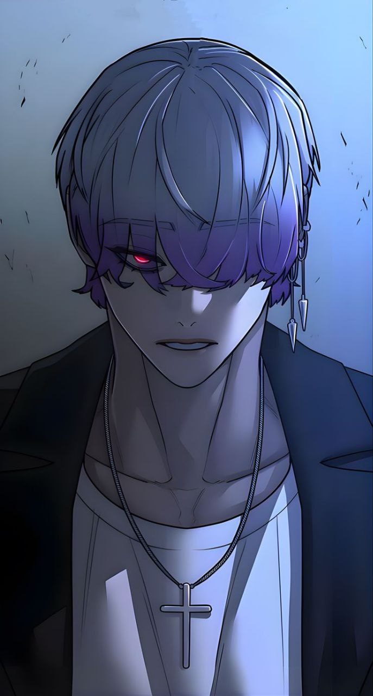
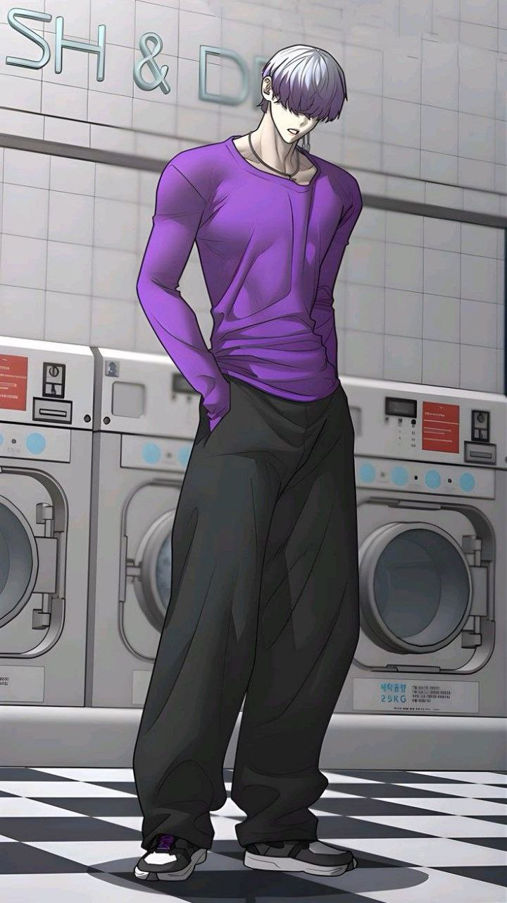

Рюхей Сугивара
Клан Сугивара

Возраст: 18 лет
Рост:187
Вес: 75
Пол: Мужской
Телосложение: Атлетичное
Национальность Японец Место рождения: вероятно Окинава, деревня Онна
Работа
Инвентарь
Одежда и аксессуары
Всё, что вы можете представить тут есть.
Проклятые орудия и предметы
Меч 1000 осколков. Ранг ОСОБЫЙ
Это меч длинной клинка 75 СМ и 25 СМ рукояти. Меч может рассыпаться на неопределённое растояние, превращаясь в кучу осколков давая возможность бить противника на растоянии
- Прочность UR в собраном. SS+ в Рассыпаном
- Длина без потери Эффективности Х3 от размера клинка, для укола 4-5 метров
- Острота это сила юзера +2
- Рассыпается со скоростью Скорость юзера +1
- Скорость атаки и тому подобное зависит от юзера
- Рассыпан он может быть не больше чем один пост, с одним постом передышки

Предметы роскоши
Телефоны с разными сим-картами, макбук, несколько раций, Бижутерия, Автомобиль: 100 Креста на Стенсе, Дом ( г. Одавара ) 150 кв метров: Сейф с деньгами на чёрный день(4 млн йен),Кухонная техника и приборы, деревянная мебель; Звукоизолированное подвальное помещение внутри дома размер 10 на 10 на 4 метра: Холодильники, Токарный станок, Фрезерный станок, Точный станок по металу, Пресный ручной, Ртутный насос Шпренгеля, Зарядник балонов аквалангов, Газовая горелка для сварки и балон с газом соотвествененно ,Набор строительных инструментов; , Личный Карго контейнер закопан в лесу Аокигахара: промышленный Вакууматор.
Проклятые техники
Канон Нефритового Сада
Принцип работы техники.
Техника позволяет призвать шикигами в человеческом обличье. Это разумное
существо, способное к самостоятельному мышлению и осмысленному диалогу.
Несмотря на развитый интеллект, шикигами всецело подчиняется владельцу
техники и беспрекословно исполняет его волю.
Основная способность шикигами заключается в поглощении проклятой энергии
хозяина и преобразовании её в универсальную субстанцию. Из этой
субстанции он способен воссоздавать различные вещества растительного или
животного происхождения, а также их производные.
Чем сложнее формула создаваемого вещества и чем больше его объём, тем
выше затраты проклятой энергии. Воссоздаваемые вещества могут принимать
любую форму: от таблеток и пилюль до пыльцы, жидкостей и газов.
Кроме того, шикигами способен выпускать из своего тела растений такие
как цветы, маленткие корежки и лозы.
Сильные|слабые стороны
Универсальность. Разумность. Приминение как и в бою так и в мирных целях. Возможность Шикигами пользоваться преимуществом человечского обличия. Благодаря своей растительной природе шикигами не имеет жизненно важных органов, что придаёт его телу высокую устойчивость и живучесть. Повреждения, которые были бы смертельны для человека, для него не являются критичными.
Огонь. Низкий разрушительный потенциал. Пестициды? Не придаёт хозяину мгновенный иммунитет от созданных вредоносных веществ.
Проростание
Способен прорастать в новом месте, убивая предыдущее тело заставляя его вянуть, тело становится древесной статуей. Сикигами пускает в определённое место корень, и в определённой части какой либо поверхности прорастает в качестве нового тела Сикигами. Если перерубить корень, не вся ПЭ Сикигами переместится из-за чего он станет меньше и слабее соотвествененно. Выстрел корнем под землёй довольно быстр. И перемещается со скоростью бега сикигами + 2 ранга. Корень может быть пущен из любой конечности
Условия техники
Для призыва шикигами требуется прикоснуться к любой поверхности и произнести его имя — Му Дань. В этот момент пользователь словно извлекает его из земли или даже из стены. Из-под кончиков пальцев начинают прорастать дикие цветы, быстро распускаясь и покрывая поверхность ковром цветения. Среди этих цветов постепенно формируется силуэт, и из цветущих стеблей появляется сам шикигами, будто рождённый из живой земли.
Призыв Шикигами — 100 п.э.
Прорастание шикигами — 50 п.э.
Создание цветка - 1 п.э.
Создание дерева (до 20 метров высота, где-то 5 кубов) — 4 п.э.
Лозы (без укреплений) 1м = 1 п.э.
Газы — ±20 п.э. в зависимости от эффектов и области, здесь на 4м².
Пилюля — ±30 п.э. в зависимости от эффектов.
Визуальная часть
Шикигами выглядит как юноша в самом расцвете сил. На его лице всегда лёгкая улыбка — спокойная и немного загадочная. Его волосы напоминают лепестки цветов: мягкие и слегка растрёпанные, будто их постоянно касается лёгкий ветер. Он носит свободные одежды, похожие на наряды даосских мудрецов: длинные, с широкими рукавами и простым, но аккуратным кроем. В его внешности сочетаются молодость и ощущение древней мудрости.
Запас и свойство проклятой энергии
Запас 3600 У.Е. Свойство отсутствует
Трейты персонажа.
- Аура Фармер
- Магнат Магического Мира
- Мастер меча
Умения/навыки
- Рыночное влияние: Благодаря связям и финансам вам гораздо легче раздобыть оружие [Особого Ранга], чем любому другому шаману. На чёрном рынке магии для вас нет ничего невозможного.
- Ультимативная насмешка: Во время боя вы можете потратить целый пост на демонстративную насмешку или пафосное действие. В случае успеха вы получаете множитель х1,5 ко всем характеристикам на 3 поста.
- Навык управления толпами
- Умение вести себя будучи в центре внимания
Потенциал: Обычный
Слабости
- Риск и унижение: Если противник сумеет нанести вам урон непосредственно во время выполнения насмешки (вы имеете право на контрпост для защиты), вы теряете «ауру» и получаете дебафф: Множитель х0,75 ко всем характеристикам на 3 поста.
- Безглазый из биографии
Характер/Личность
Рюхэй производит впечатление непредсказуемого и безразличного человека. Большую часть времени он кажется добродушным и сохраняет эту невозмутимость даже в бою до поры до времени. Однако за этим беззаботным фасадом скрывается жестокость и садизм. Это проявляется в его взгляде когда он не произносит ни слова, но на его лице написано, что ему не нравяться или слова человека перед ним. Наставники говорили, что Рюхей становится серьезным, только когда дело касается его людей или когда задевают его гордость.
Но практически всегда его деловая хватка стоит на первом месте ведь
как человека привыкший жить в роскоши и свободе от финансовых забот,
он не желает понижать планку жизненных потребностей. Однако через
некотррые события из прошлого он поменял свои приоритеты и готов
отдать огромные деньги за достижение своих целей.
Он осознал, что насилие приносит ему больше удовлетворения, чем
деньги, которые он изначально просит, если это насилие направлено в
сторону тех кто ему не нравится. Он терпеть не может, когда его
недооценивают, и может прийти в ярость, если его сравнивают.
Любимейшая философская тема Рюхэя — свобода в широчайшем спектре понимания. Для него нет ничего более разочаровывающего, чем человек, отказавшийся от собственной независимости и личной свободы. Сам он не считает себя по-настоящему свободным, но тратит огромные ресурсы, чтобы это исправить. Рюхэй глубоко убеждён, что без свободы нет и жизни, и что свобода во всех её проявлениях — это именно та концепция, к которой стремится любое живое мыслящее существо: будь то человек или проклятие.
Биографии
Происхождение
Отец — лидер религиозного культа, действовавшего в деревне Онна после национальных катастроф, известных как «Инцидент в Сибуе» и «Смертельная миграция». Культ эксплуатировал общественный страх перед повторением трагедий и предлагал жителям «защиту» и «очищение».
Под управлением отца деревня функционировала как изолированная община с централизованной властью. Финансирование обеспечивалось пожертвованиями, инвестициями сторонников и нелегальной деятельностью (включая скрытые плантации мака).
Ранний период
В возрасте 6 лет зафиксировано первое проявление способности видеть проклятия. Информация о способности скрывалась сознательно.
В тот же период один из детей деревни был публично обвинён в «источнике бедствий» из-за схожих проявлений. После ритуального преследования его семья совершила самоубийство. Событие стало фактором принятия решения о сокрытии собственных способностей.
- Субъект воспитывался как наследник лидера культа:
- усиленная физическая подготовка;
- повышенный уровень обеспечения;
- обучение управлению массами и публичному поведению.
Структура Культа
Установлено: отец не обладал способностью видеть или использовать проклятую энергию.
Защиту деревни обеспечивали приглашённые маги. Их присутствие носило временный характер. При попытке усилить влияние они объявлялись «еретиками» и устранялись силами общины.
Система управления строилась на следующих принципах:
- использование страха как инструмента консолидации;
- коллективная вера как механизм усиления влияния;
- изоляция территории как форма барьерной структуры;
- централизованный контроль финансовых потоков.
Перемещение
В возрасте 15 лет земля деревни продана под коммерческую застройку (курортная инфраструктура). Руководство культа передано номинальным лицам. Основные активы переведены на закрытые счета.
После продажи семья покинула регион. В течение двух лет происходили регулярные смены мест проживания по инициативе отца. Причина — опасения преследования и разоблачения.
В указанный период субъект:
- развил физические показатели выше уровня отца;
- начал систематическое освоение применения проклятой энергии;
- получил частичный доступ к личным записям отца (далее — «Книга»), содержащим сведения о структуре мира магов.
Инцидент в мотеле (возраст 17 лет)
Местоположение семьи раскрыто бывшими членами культа. Группу сопровождал ранее изгнанный ребёнок (далее — Объект ЧГ), обладающий высокоуровневой аномальной способностью.
В ходе нападения отец получил смертельное ножевое ранение.
Субъект зафиксировал значительное подавляющее воздействие со стороны Объекта ЧГ. Вероятность выживания оценивалась как критически низкая.
В целях сохранения жизни субъект самостоятельно удалил правый глаз. После действия Объект ЧГ прекратил атаку и позволил покинуть место инцидента.
Отец скончался до оказания медицинской помощи.
Во время стрессовой реакции впервые проявлена собственная техника субъекта (условное наименование — «Поле цветов»). Эффект: пространственная стабилизация эмоционального состояния и изменение сенсорного восприятия окружающей среды.
Последующие действия
Получена «Книга» отца как личное имущество.
Финансовые активы
переведены под полный контроль субъекта.
Проведена очистка
цифровых и юридических следов, связывающих с деревней Онна.
В
течение года осуществлён выход на представителей магического
сообщества.
Подтверждена боевая пригодность в устранении проклятий среднего уровня.
Цели мотивации
- Полная интеграция в мир магов.
- Анализ и систематизация знаний, оставленных отцом.
- Рост личной силы.
- Поиск и повторная встреча с Объектом ЧГ.
Организация, в которой состоит ваш персонаж.
Тут будет текст
Капитал
4 Милионна Йен
Внешность


